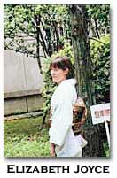

Silence Replenishing the Blank Page: Susan Howe's "White Foolscap" [an excerpt]
by Elizabeth Joyce
Foolscap: White paper of a kind that used to have a fool's cap as a watermark. In Susan Howe's poetry it relates to the space on a page that has no verbal language imprinted on it, yet it essays to speak.
Fool's cap: a dunce's hat, of the type that one would wear when being punished in the classroom and forced to sit on a stool in a corner. In this poem the dunce's hat refers to King Lear's stupid behavior in the Shakespeare play towards his daughters, especially Cordelia, and to the final confusion in the play as to who is the fool, Lear or the fool or Tom (Edgar of Gloucester playing the part of the crazy beggar).
Fool's cap: a pointed hat with bells, worn by the fool in court, not merely a jester but also one who through the guise of humor could openly criticize the king. Guise is important in this poem, but also in the play King Lear. In both works clothing indicates a certain flexibility of identity, that can be shaped at will by superficial appearance, but this very malleability in its slipperiness induces anxiety about who one is, about what defines one's self.
Argument: In the silence between the mad gasps in this poem surfaces the lost remnants of Cordelia, of woman, of the one who remains unable to express herself. For this is Cordelia's problem, isn't it? She is unable to put her emotions into words: "I cannot heave/ my heart into my mouth" (I.i,91-2). And she loses her dowry, her father's love, and her life because she will not pretend to be able to attempt to explain to her father the extent of her love for him. Ann Vickery suggests that like Antigone, Stella and Cordelia "are rendered exiles though heeding their duty of love over duty to the state"(94), but Cordelia, [perhaps], is exiled not only from her own country, but from her language, from its inability to express intangible and irrational qualities.
History and Silence: Susan Howe often talks about history and how it has elided women and how in doing so, women have lost their ability to speak or to speak coherently. This poem replicates this repression of expression, mirrored in French's remark in King Lear on hearing Lear's reason for disowning Cordelia: "Is it but this? A tardiness in nature/ Which often leaves the history unspoke/That it intends to do"(I.i, 235-7). And so, as Vickery says, "Concerned with the violence of history through representation, Howe returns to the dead in order to commemorate, in the sense of remembering them as subjects" (93).
The poem talks about women's inability to participate directly in history: "we are left darkling/ waiting in the wings again" (176), but how because we "have forgotten" history, we must go back to the original moments, that "vagueness of the scene/ where action takes place" (176). "I can re//trac// my steps," says the narrator, "Iwho//crawl// between thwarts// Do not come down the ladder// for I// haveaten// it a// way" (177). "Trac" is a part of trace or track, to get back into the past, to find one's way. To eat it a way is both to destroy the route, the ladder, by consuming it, and to make a way by eating, to cut a pathway, thereby both erasing the route and delineating it.
In Pythagorean Silence Howe writes, "Text of traces," traces of text across the ocean in that case, across the sky and the page in this one, very much the way Mallarme tosses the dice across the page in Un coup de des.. "But crucial words outside the book/ those words are bullets./ Lodged in the ebbing actual/ women in the flight of time stand framed"(178). These are the words that Howe seeks to recover, those outside the book of history where women's voices and actions have been relegated. "If you are a woman," Howe says in The Birthmark, "archives hold perpetual ironies. Because the gaps and silences are where you find yourself" (158).
Peter Quartermain and Vickery discern Howe's effort to recast history for, as Quartermain says, "History, like language, is not and cannot be linear" (194) and Vickery concurs by suggesting that "The Book of Cordelia" syntactically reflects the gaps of the histories, whilst foregrounding an alternate layer of meaning that lies within marginalia through sound shifts and patterns"(99). The poem mimics history as Howe reframes it in order to recoup what is not said overtly in the history books, in order to find the "words outside the book."
Silence of Speech/ sound of language: The poem starts with a "heroine in ass-skin," not merely wearing garments depicting a lower social stature than hers, but asking a question, asking one unheard and unanswered, because, perhaps, her voice is soundless, "mouthing O Helpful" (171) but not saying it. Howe says in The Birthmark, "Silence becomes a Self. Open your mouth. . . . In such silence women were talking. Undifferentiated powerlessness swallowed them" (50). In not speaking, Cordelia loses all that is important to her. The poem says, "Cordelia dies" (175) and "reclasp[s] her hands into obscurity"(175), since a woman's valorous actions do not merit historical validation.
In the play King Lear the lesson is that Cordelia's inability to describe her feelings for her father is normal, and her dismissal of flowery empty language shows the depth of her integrity. "If for I want that glib and oily art/ To speak and purpose not since what I well intend," she argues, I'll do’t before I speak. . ."(I.i, 224-5). Edgar reinforces this sentiment in the last, morally laden lines of the play: "Speak what we feel, not what we ought to say"(V,iii,325). Cordelia's actions, or inactions, really, are appropriate but the cost of her speechlessness is her loss in history and the, albeit temporary, deprivation of her father's love.
"Can you not see/ arme armes [weapon weapons]/ give tongue/ are you silent o my swift/ all coherence gone?"(176). So the poem transfers speech to weapons of war, "to give tongue" as a physical manifestation of the speech act. But this speech makes no sense and the "you" the audience? Cordelia? Is unable to speak at all. When verbal utterance occurs in this poem, it is inarticulate, incoherent. The Hero of the poem can only "spittle speak// only nonsense"(171). He is "bellowing augury,"(171) like King Lear’s Edgar's (Tom O'Bedlam's) speech. It makes no sense but sounds like it might portend something.
"hrr/ hrru/ hurry/ hare/ haloo/ cry Whoop/ and cry Spy!": Howe says in her Difficulties interview that "sound is part of the mystery," (21), that excision of the surface meaning of language leaves only the sound, a pattern of expression that might well recuperate gaps in history.
Quartermain calls this "a stuttering narrative of inarticulation unspoken within the narrative"(187). The poem, then, represents Howe's effort to find what has been unspoken, or what has been incoherently spoken, to piece together the fragmented shards of the remains of the woman in history.
Blank paper: The words outside the book
The poem talks about poetry: "pauses measures feet in syllables caesura Copernicus," but in so doing, it ruptures tradition and splinters meaning in order to reconceive of language and of how it appears on the page (173). Quartermain proclaims that "the impulse to disorder in the world leaves its mark in the sheer isolation of Howe's poems on the page, surrounded by white: a visible trope of Howe's tough and difficult feminism. There are figurations in these figures who are figured against no ground, who move away from ground, who move without" (193).
The comparison to the visual arts in Howe's poetry is common, as she began work as a painter, but the relation between figure/ground perspective and her style is elucidating, for isn't it the structure of the language that cements the hegemony at play in history? To disrupt this structure is to fracture what is accepted as "logic" in this culture in the same way that to eradicate single-point perspective dissolves the ground in a painting, or turns everything depicted in a painting equally into ground by dismissing hierarchy of focus.
Part of grounding in the verbal forms derives from sentence structure, but the occurrence of complete sentences is rare here and usually avoids connecting meaning to their place in the poem. . . Because of this continuous undercutting of the lines that superficially appear to be comprehensible according to standard rules of the language, Howe successfully forces attention to the spaces on the page, those uncovered (not only not covered by but also those exposed) by text. After the "no no no" and the slant of the "hrr/ hrru/ hurry/ hare/ haloo/ cry Whoop/ and cry Spy!" the space takes over in the absence of literal meaning. What is not said by Cordelia, by women in history, surfaces in the silence in the space of time next to "the sun/ is a cloud/ of dust" and on either side of the ladder, for even though she has eaten it away and can move across rather than up or down, "athwart," we cannot help but descend into the void of anti-representation. Negative space is what some people call it, referring to the space left by a work of sculpture, but how can space be negative? It fills the void. By creating the void, Howe permits the space of the memory of women to surface, the negative memory.
At the same time, her rejection of sequential event, of plot, of consequence, forces the words on the page to devolve into the emblematic, static and crystallized "as if nothing has happened" in parentheses with a large space to the left. The sun is a pivotal image in this poem, "threshing the sun's corona" "chromosphere" "Copernicus" "the sun/ is a cloud/ of dust." The sun is a witness of all that has been lost in history, the central litmus of identity, but the poet cannot recuperate these losses and remains anxious about the fissures in memory and the cost to Cordelia of speechlessness: "heartrending"; "I will go to my desk/ I will sit quietly/ . . . what is eaten is gone"(175).
Works Cited
Howe, Susan. The Birth-mark: Unsettling the Wilderness in American Literary History. Middletown, CT: Wesleyan University Press, 1993.
---. "The Difficulties Interview." The Difficulties 3.2 (1989): 17-27.
---. The Europe of Trusts. Los Angeles: Sun and Moon Press, 1990.
Quartermain, Peter. Disjunctive Poetics: From Gertrude Stein and Louis Zukofsky to Susan Howe. Cambridge: Cambridge University Press, 1992.
Shakespeare, William. King Lear. Baltimore: Pelican, 1972.
Vickery, Ann. "The Quiet Rupture: Susan Howe's The Liberties and the Feminine Marginalia of Literary History." Southerly 57.1 (1997): 91-102.
BIO: Elisabeth Joyce is an assistant professor at Edinboro University of Pennsylvania. Her Cultural Critique and Abstraction: Marianne Moore and the Avant-garde appeared from Bucknell University Press in 1998. She is currently working on relations between image and text.